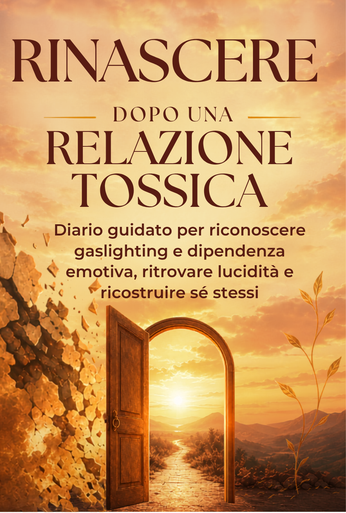
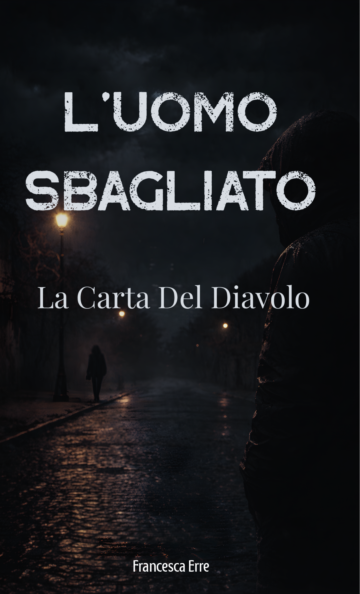

Diario guidato per riconoscere gaslighting e dipendenza emotiva, ritrovare lucidità e ricostruire sé stessi.
Scopri su Amazon →101 verità da rileggere quando la testa ha capito ma il cuore non ancora.
Scopri su Amazon →
La carta del diavolo. Un thriller psicologico, per chi vuole continuare a leggerne.
Scopri su Amazon →Tre domande veloci per capire quale parte del libro fa per te, adesso.
Rispondi con quello che senti oggi, non con quello che pensi sia "giusto" rispondere.
Ricevi solo questa email. Nessuno spam, puoi disiscriverti quando vuoi.
"..."
Torna a essere tuaTi abbiamo anche mandato via email tutte le pagine di questo capitolo, così puoi rileggerle quando vuoi.